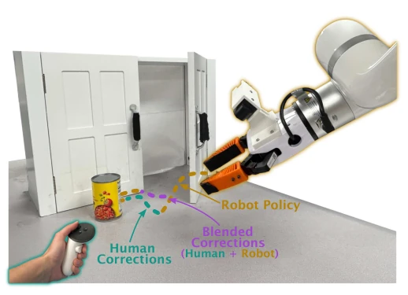
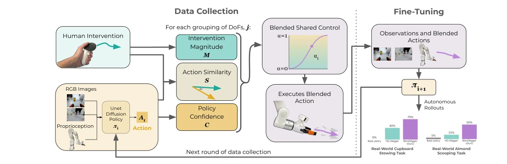
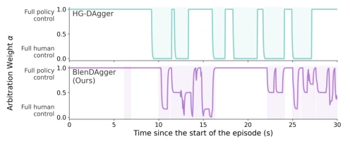
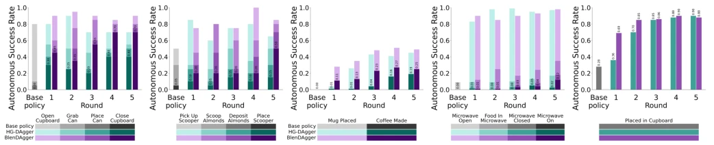
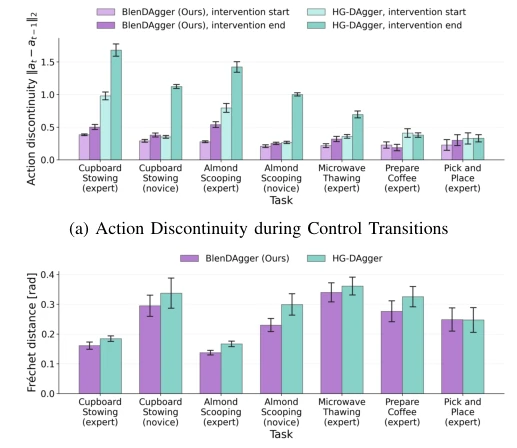

This paper incorporates a mixer into DAgger. Traditional HG-DAgger functions like a switch, alternating between human control and machine control, resulting in stiff and tedious switching. BlenDAgger implements mixed control, blending human and robot actions akin to mixing a cocktail. The results are indeed favorable, with real-world task success rates surging by 30 percentage points and data collection accelerating. However, a critique arises: users perceived no difference, indicating this mixing may benefit the machine while remaining imperceptible to humans. Furthermore, parameters are fixed; switching operators might render it ineffective. Overall, this represents a pragmatic improvement in interactive imitation learning. Although it does not resolve the fundamental issue of poor novice data quality, it successfully elucidates mixed control mechanisms.
Imitation learning is frequently plagued by covariate shift, which DAgger [5] and its variants alleviate through human intervention. However, existing HG-DAgger [6] employs a gating mechanism where humans fully take over during intervention, resulting in heavy operational burden and prone to suboptimal interventions. Full teleoperation is not only tiring but also easily drives the robot into out-of-distribution states. Existing shared control is mostly used for assisting robots rather than training policies, lacking a framework to directly utilize mixed control signals for policy fine-tuning. This paper aims to verify whether mixed shared control can provide more effective learning signals, addressing the distribution jumps and action discontinuities caused by gating switching.

Fig. 1: BlenDAgger shares control between the robot’s policy and the human demonstrator during corrections, resulting in higher autonomous success and faster data collection.
The core is the BlenDAgger framework, which replaces traditional gating. The pipeline is: policy execution -> intervention detection -> compute arbitration function alpha -> mixed action -> execute and collect data -> fine-tuning. The arbitration function alpha_t is the key innovation, based on three components: action similarity (cosine similarity), policy uncertainty (k-NN embedding distance), and intervention magnitude. Fused via a Sigmoid function, alpha=0 denotes pure teleoperation, alpha=1 denotes pure autonomy. Actions are grouped by degrees of freedom (translation/rotation) to independently compute arbitration, and EMA smoothing is introduced. Compared to fixed gating, this allows maintaining partial autonomy during intervention, making transitions smoother and trajectories closer to the training distribution. Additionally, the system supports iterative fine-tuning; after each round, data is aggregated and the policy is retrained, with uncertainty calibration also updated per round. This design avoids action jumps at the switching instant of traditional gating, theoretically reducing access to out-of-distribution states and enhancing policy robustness.

Fig. 2: BlenDAgger pipeline. When the demonstrator chooses to intervene, their action is blended with the policy’s predicted action. The resulting blended action is executed on the robot and used to fine-tune the policy.

Fig. 4: α over an example 30-second segment. Highlighted sections show timesteps where the participant is intervening.
Evaluated on RoboCasa simulation and two real-world tasks (cabinet storage, scooping almonds). The baseline is HG-DAgger. Metrics include success rate, collection time, and action discontinuity. Results show BlenDAgger achieved a success rate increase of over 30% on real tasks, with gains also observed in simulation tasks. A user study (n=14) indicated faster data collection, but no subjective difference was perceived. Ablation studies reveal that mixed control itself is the primary cause of performance improvement, while individual arbitration components affect response speed. Trajectory similarity increased by 14%, and action transition smoothness improved by 57%, validating the advantage of mixed control in reducing OOD states. Notably, although novice data is inferior to expert data, BlenDAgger still outperforms HG-DAgger, indicating the mixed mechanism possesses certain fault tolerance for non-expert interventions.

Fig. 5: Autonomous performance on real-world (a–b) and simulation (c–e) tasks. Bar colors indicate the highest subtask reached during an episode. Full task success is labeled.

Fig. 8: BlenDAgger has smoother action transitions and lower trajectory distance to training data. Error bars show 95% CIs.